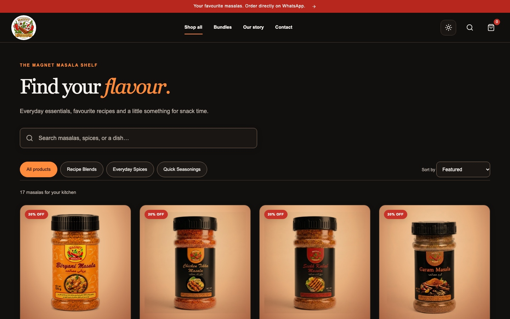
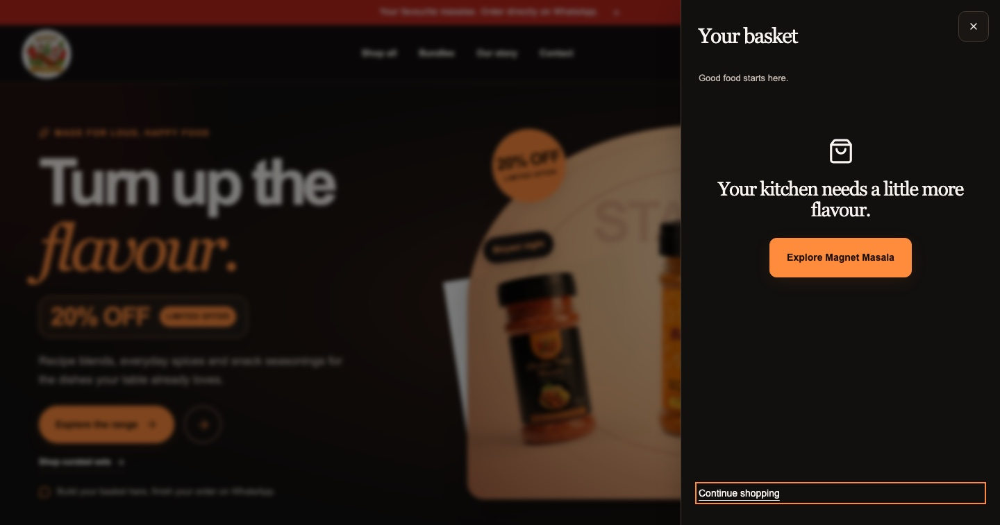

Make categories scannable
Group products across recipe blends, everyday spices, and quick seasonings.
A responsive online storefront for a Pakistani spice brand, supporting product discovery, pack selection, basket review, and order continuation through WhatsApp.


Magnet Masala's live storefront presents recipe blends, everyday spices, quick seasonings, and curated bundles. Customers can browse the catalog, view product details, select pack sizes where offered, and build a basket.
The current checkout handoff continues through WhatsApp. The site prepares an order message; final availability, delivery details, and order confirmation are handled in chat. The live site does not present an integrated card-payment checkout.
Product goals describe the experience the storefront supports, not measured commercial results.
Group products across recipe blends, everyday spices, and quick seasonings.
Present product descriptions and pack-size options where available.
Let shoppers add products or curated sets and review basket contents.
Set expectations that order continuation and delivery confirmation happen in WhatsApp.
The steps below reflect the live storefront's customer-facing flow.
Explore products by category, search, or collection.
Open product details and select a listed pack size where available.
Add individual products or curated bundles to the basket.
Check selected items and quantities in the basket drawer.
Open the prepared WhatsApp order message and confirm details in chat.
Payment and delivery: the public site describes WhatsApp order continuation and confirms delivery details in chat. No payment gateway or completed order is claimed in this case study.
These authentic captures show the homepage and catalog at desktop size and the homepage at a mobile viewport.


This portfolio identifies Magnet Masala as my responsive storefront project. The documented project work focuses on product discovery, responsive presentation, product selection, basket review, and the WhatsApp order handoff visible in the live experience.
The portfolio repository does not include the storefront source repository. I therefore do not claim a framework, CMS, backend architecture, payment integration, or automated test coverage. The screenshots and behavior described here were checked against the public site.
The storefront is publicly accessible. Its customer journey lets shoppers browse the catalog and prepare an order for follow-up through WhatsApp.
Open Magnet Masala